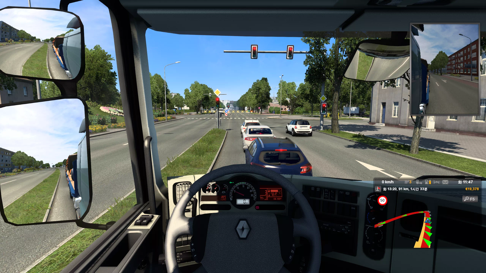
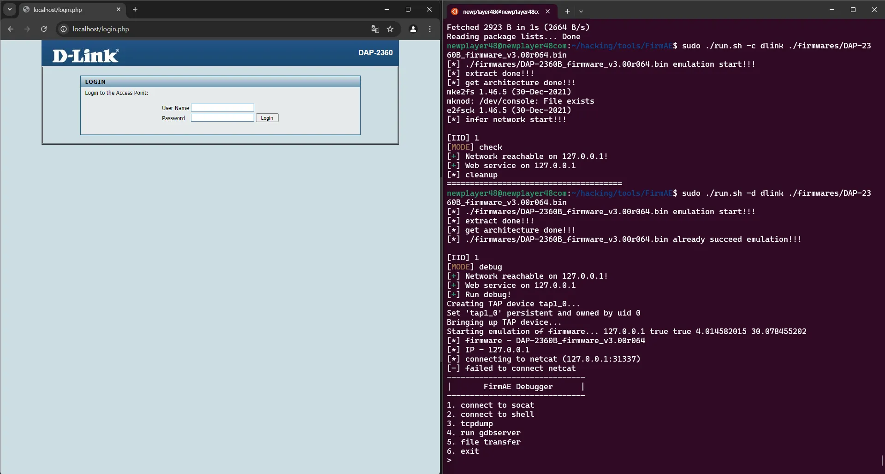

[Research] Firmware Emulation with FirmAE Part 1 (en)
Hello! I’m newp1ayer48, the one in charge of the low-level at Hackyboiz! 🤸🏻♂️
In the previous post, I said I’d return to debugging port connections, but due to budget constraints, I’m back with a different topic! (Embedded hacking is all about pay-to-win…💸)
Once you’ve acquired the firmware and examined the file system, it’s time to dive into the fun part—analyzing it for vulnerabilities.
But… relying solely on static analysis to find vulnerabilities is hardly an ideal situation. Even in pwnable challenges we use GDB, so how long are we just going to stare at IDA? 😠
That’s why humans have always found a way. The answer is emulation!

1. Simulation vs Emulation
Since the processes of building simulations and emulations can be quite similar, it’s easy to confuse the two. But the biggest difference lies in their goals.
The main purpose of simulation is to test whether a program or system behaves correctly in a certain environment or scenario, often as a form of rehearsal. Rather than fully replicating the entire environment, simulations may only implement the minimum necessary parts and skip detailed functions. Sometimes, real hardware is used in the setup.
To put it simply, think of simulator games! These often don’t replicate every feature perfectly, but their main purpose is to provide an experience or allow practice. 🕹️

Emulation, on the other hand, focuses on running a program or system in a different environment. Since the original hardware setup may be unavailable, it’s important to mimic the hardware in software. The goal is often to make every function work as it would on the real system, so most emulations aim to replicate everything in detail.
You can think of emulation like Nintendo or Android emulators! Their main purpose is to let you run games or apps in a PC environment, so they’re designed to support all the functions of those systems. 📱
To summarize, the image below (not shown here) illustrates the key difference well.
Back to embedded hacking—our main goal is to perform dynamic analysis of the firmware we’ve obtained. Embedded devices rely heavily on various sensors and hardware, so if the required hardware dependencies aren’t met, they often won’t function. Also, embedded systems typically use RISC architectures like ARM or MIPS, which means we have to emulate them in environments different from our typical CISC-based analysis systems. And since we want to dynamically analyze all the device’s functions, nearly every feature must be executable. 👷🏻
Therefore, we need to view the firmware from an emulation perspective and build the appropriate environment. The prevalence of articles in embedded hacking that involve firmware emulation supports this approach!
2. Firmware Analysis
To emulate firmware, the first step is to analyze the environment in which it was built and is supposed to run. ☝🏻
With binwalk, you can extract several key pieces of information from firmware:
- Architecture
- Kernel
- Root File System
Using binwalk, you can discover the architecture and kernel details of a sample firmware.
binwalk firmware.binThe -A option provides more detailed architecture info. 🔍
The -e option extracts files from the identified sections.
The files extracted by binwalk often have numeric names, which correspond to the different regions of the firmware. By checking the addresses listed by binwalk, you can identify what each file is.
binwalk -e firmware.bin
binwalk -A kernel
Embedded systems commonly use RISC architectures like ARM and MIPS. However, even within these, naming can differ depending on the endianness. 🥚
For example, mips typically uses big-endian, while mipsel uses little-endian. Binwalk usually detects and displays the architecture correctly, so just keep an eye on that.
3. QEMU
Once you’ve identified the firmware’s details, it’s time to emulate it. Firmware can be run on a QEMU virtual machine. 💨

QEMU is a virtualization tool frequently used to quickly set up emulation environments. You can specify kernel, image files, and other options. It’s installable via apt.
In the case of router firmware, there often aren’t many extra hardware or sensor dependencies beyond the firmware itself. So, if the kernel and image are configured correctly, the firmware can be run right away.
You can download architecture-specific files via the links provided (not shown here). 💾
https://people.debian.org/~aurel32/qemu/
If you manually match the necessary files and set up the network, you’ll be able to access the router’s interface like below and use most of the functionality present in the root file system. 🌐
source: Bach`s Blog
4. FirmAE
QEMU requires manual setup for networking and file configurations, which can be cumbersome.
But once again, humans found a way! There’s a tool that simplifies emulation…
And that tool is the main subject of this post: FirmAE! 🥁
https://github.com/pr0v3rbs/FirmAE

FirmAE is a firmware emulation automation tool developed by KAIST SysSec Lab. The research team created it to simplify the emulation of router and IP camera firmware images. It’s built on QEMU and Binwalk. 🔨
You can install and run it via GitHub.
# download
sudo apt-get install -y bc fdisk qemu qemu-system-mips64 python3-psycopg2
git clone --recursive https://github.com/pr0v3rbs/FirmAE
cd ./FirmAE
./download.sh
./install.sh
./init.sh
# firmware in FirmAE/firmwares
sudo ./run.sh -c VENDOR ./firmwares/
sudo ./run.sh -d VENDOR ./firmwares/When you emulate a sample router firmware using FirmAE, you can access the router’s web page just like before! The emulation process can take a fair bit of time, so be patient—it typically takes around 20–30 minutes (!). ☕

However, as indicated in the options, FirmAE was developed based on models from well-known router and IP camera manufacturers tested by the research team. As a result, it may not work well with less common devices or other embedded/IoT products. It also offers gdbserver functionality, but this often doesn’t work reliably either. 🥲

In Part 2, I’ll explore FirmAE’s internal structure and how it works, and show how to emulate firmware in different environments and use the various features it provides effectively! 🤙🏻
Thanks for reading!

본 글은 CC BY-SA 4.0 라이선스로 배포됩니다. 공유 또는 변경 시 반드시 출처를 남겨주시기 바랍니다.